204
UNIDADE 6 - Medidas de comprimento e números decimais
Tartaruga-de-Pente. Praia da Feiticeira. Ilhabela, SP, 2021.
Nascimento
1 - SAINDO DO NINHO
Depois de rasgar a casca do ovo com a carúncula, que fica na ponta do bico, o filhote sobe até a superfície da areia e procura a luminosidade do horizonte para alcançar o mar
2 - NO MAR
Se orienta pela ondulação que a afasta da costa e pelo campo magnético terrestre
... e demora mais 3 ou 4 dias para o filhote sair do ovo e subir à superfície
205
DETERMINANDO O SEXO
O sexo da tartaruga marinha é determinado pela temperatura da areia onde os ovos repousam. O ideal para o nascimento da mesma quantidade de machos e fêmeas é de 28,74ºC
De cada 120 ovos de tartaruga marinha, geralmente 90 nascem (75%) e chegam ao mar. A perda de 25% se deve à incapacidade de cavar a areia acima de si para chegar até a superfície, à não fertilização de alguns ovos e à temperatura inadequada para o desenvolvimento embrionário

CONVERSE
1. Qual o assunto abordado no infográfico?
2. Você conhece no Brasil algum projeto de preservação ambiental que cuida para que essa espécie de tartaruga não entre em extinção? Para você, qual a importância desse tipo de projeto?
3. O infográfico sobre o nascimento das tartarugas nos mostra várias informações por meio de números. Todos os números que aparecem nele são naturais?
4. Quais números você identificou que não são naturais? Como são chamados?
5. Alguns números no infográfico nos mostram medidas de comprimento. Quais são eles e o que representam?
205
CAPÍTULO 1 - Algumas unidades de medidas de comprimento e números decimais
Introdução às medidas de comprimento e aos números decimais
Os sistemas de medidas tornaram-se fundamentais a partir do momento em que a sociedade começou a comercializar coisas, construir estruturas e a assumir a propriedade da terra. As primeiras civilizações precisavam medir distâncias, áreas, volumes e tempo. Então, criaram formas de medir, conhecidas como unidades de medidas. Grande parte das unidades de medidas utilizadas hoje tiveram origem na antiga Babilônia, Egito e Império Romano.
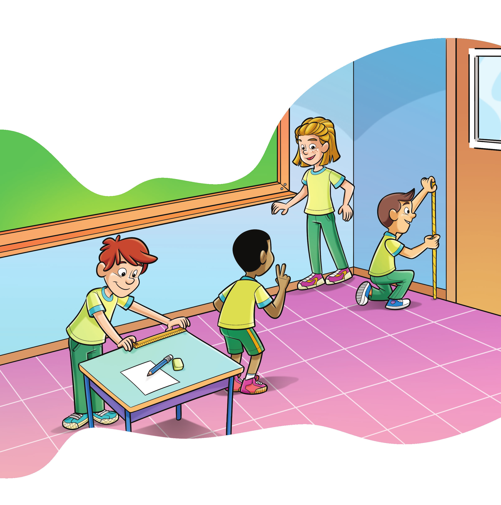
1. Troque ideias com um colega e com seu professor, em seguida, escrevam no caderno algumas unidades de medidas, para medir comprimentos que vocês conhecem e que são utilizadas nos Estados Unidos, na Inglaterra e que são pouco usadas no Brasil.
2. No Brasil, utilizamos o Sistema Métrico Internacional. Quais são as unidades de medidas de comprimento mais comuns utilizadas nesse sistema? Converse com seu colega e escrevam no caderno as unidades de medidas que vocês conhecem.
207
Vamos conhecer algumas unidades de medidas utilizadas para medir comprimentos.
Polegada: 1 polegada (1”) corresponde a 2,54 cm. Essa unidade de medida é muito utilizada para indicar o comprimento da diagonal da tela de um aparelho de TV. Observe uma TV de 55”.
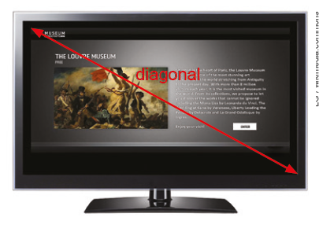Pé: 1 pé corresponde a 30,48 cm. Essa unidade de medida é utilizada pela Ae-ronáutica para indicar a altitude dos voos.
A altitude de cruzeiro de um voo comercial, em longas distâncias, é de aproximadamente 43 000 pés. Farnborough, Reino Unido, 2017.
Jarda: 1 jarda corresponde a 91,44 cm. A jarda inglesa, com origem na palavra Yard, que significa varas, foi definida como sendo a distância entre a ponta do nariz do rei Henrique I e a ponta do seu dedo polegar, com o braço esticado. Para garantir esse padrão foram construídas barras metálicas de 1 jarda para serem usadas como referência. Essa unidade de medida é utilizada, por exemplo, para demarcar as distâncias em um campo de futebol americano.
208
Milha terrestre: 1 milha terrestre corresponde a 1,609 km. Essa unidade de medida é muito utilizada para indicar grandes distâncias em alguns países como Estados Unidos e Inglaterra e foi definida pelo Sistema Imperial de Medidas, também conhecido como sistema inglês. Nesse sistema, os valores de medidas eram determinados pelos reis ingleses.

Milha Náutica: 1 milha náutica corresponde a 1,852 km. Essa unidade de medida foi determinada utilizando-se aspectos científicos. Ela é utilizada na navegação.
Vimos algumas unidades de medidas que são usadas em casos espe-cíficos. Para representar essas medidas em centímetros ou quilômetros utilizamos números decimais.
Décimos, centésimos e milésimos
Para entender melhor os números com vírgula vamos utilizar o Material Dourado. Vamos considerar o cubo como sendo 1 unidade.
1 unidade
1.º Vamos dividir o cubo em 10 partes iguais. Note que cada placa corresponde a do cubo inicial.
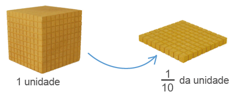A fração corresponde ao número decimal 0,1 (lemos “um décimo”).
209
2;º Agora vamos dividir o cubo em 100 partes iguais. Note que cada barra corresponde a do cubo inicial.
A fração corresponde ao número decimal 0,01 (lemos “um centésimo”).
3.º A seguir, dividiremos o cubo em 1 000 partes iguais. Note que cada cubinho corresponde a do cubo inicial.
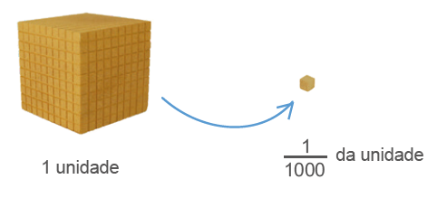A fração corresponde ao número decimal 0,001 (lemos “um milésimo”).
As frações , e são chamadas de frações decimais.
Toda fração cujo denominador é uma potência de base 10 é chamada de fração decimal.
São exemplos de frações decimais:
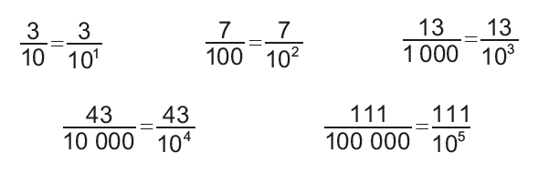210
Assim como representamos os números naturais em um quadro que mostra o valor posicional, também podemos representar números decimais em um quadro de ordens do sistema decimal.
![Tabela com oito linhas e nove colunas. A linha 1 apresenta as duas principais divisões da tabela: Parte inteira. Parte decimal. Uma coluna de vírgulas divide as duas partes. Linha 2, da Parte inteira, da esquerda para a direita: ..., Centena C, Dezena D, Unidade U. Linha 2: da parte decimal: Décimo d, Centésimo c, Milésimo m, ... Linha 3: na coluna de Unidade: zero. Na coluna do Décimo: 1. Linha 4: na coluna da Unidade: zero. Na coluna do Décimo: zero. Na coluna do centésimo: 1. Linha 5: na coluna da Unidade: zero. Na coluna do Décimo: zero. Na coluna do centésimo: 0. Na coluna do milésimo: 1. Linha 6: na coluna da unidade: 3. Na coluna do décimo: cinco. Linha 7: na coluna da unidade: oito. Na coluna do décimo: 2. Na coluna do centésimo: 9. Linha 8: Na linha da dezena: 1. Na coluna da unidade: 3. Na coluna do décimo: 4. Na coluna do centésimo: 6. Na coluna do milésimo: 2.](../../resources/images/212tb.PNG)
Veja como lemos cada um dos números:
► 0,1 → um décimo.
► 0,01 → um centésimo.
► 0,001 → um milésimo.
► 3,5 → três inteiros e cinco décimos.
► 8,29 → oito inteiros e vinte e nove centésimos ou oito inteiros, dois décimos e nove centésimos.
► 13,462 → treze inteiros e quatrocentos e sessenta e dois milésimos ou treze inteiros, quatro décimos, seis centésimos e dois milésimos.
Fazendo transformações
Situação 1
Observe a seguir como transformar o número decimal 2,3 em fração decimal.
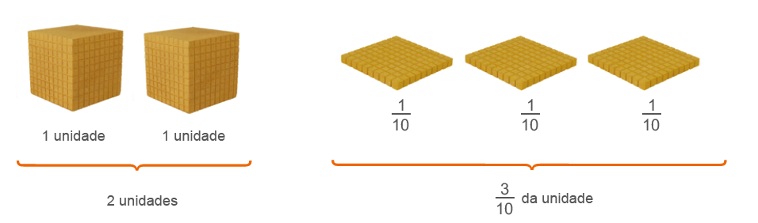Dessa forma, temos:
2 +
211
De maneira prática, tem-se:
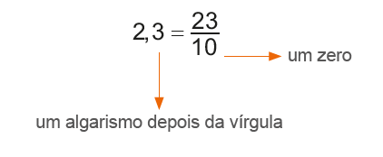Situação 2
Veja como transformar o número decimal 3,24 em fração decimal.
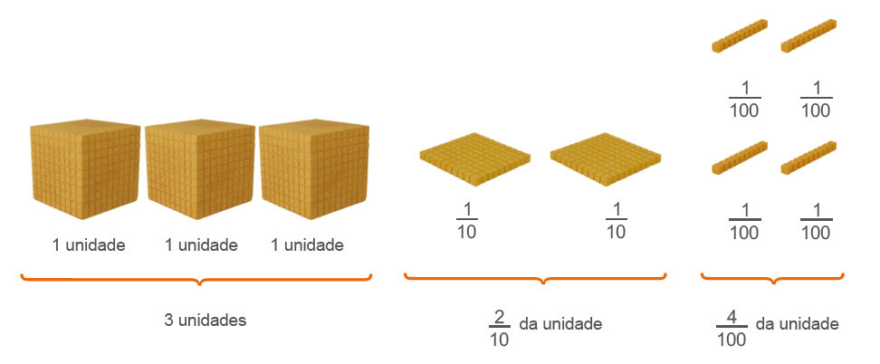Dessa forma, temos:
3 +
De maneira prática, tem-se:
Situação 3
Observe como transformar a fração decimal
De maneira prática tem-se:
212
Comparando números decimais
A reportagem a seguir refere-se ao treino do Grande Prêmio de Fórmula 1 do Brasil em 2014. Veja como ficou o grid de largada.
Nico domina Hamilton e faz a pole em Interlagos. Massa supera Bottas e é 3.º
No que depender da habilidade de Nico Rosberg em treinos classificatórios, a disputa com o companheiro Lewis Hamilton pelo título mundial ainda está longe do fim.
Após dominar todos os treinos livres do GP do Brasil, o alemão manteve a supremacia na pista de Interlagos e garantiu o direito de largar na posição de honra do grid na corrida deste domingo. Líder do campeonato, Hamilton chegou ameaçar a pole do parceiro.
Em um fim de treino emocionante, chegou a aparecer em primeiro nos instantes finais com 1min 10s 056, mas foi desbancado por Rosberg, que cravou 1min 10s 023. Exímio conhecedor da pista, Felipe Massa confirmou o bom momento [...] terminou em terceiro, na frente de Valtteri Bottas, que terminou em 4.º.
[...] SIQUEIRA, Felipe; MOREIRA, Túlio. Nico domina Hamilton e faz a pole em Interlagos. Massa supera Bottas e é 3.º. Globo Esporte, 8 nov. 2014, São Paulo. Disponível em: https://cutt.ly/RS6PqxY. Acesso em: 15 mar. 2022.
1. Converse com um colega e verifique se ele já assistiu a uma corrida de Fórmula 1 pela televisão. Se sim, qual foi a corrida e o que ele observou sobre ela?
2. Troque ideias com seu colega e escrevam no caderno como se lê cada um dos tempos mencionados na reportagem.
3. Como vocês podem observar, a diferença do tempo entre os dois pilotos foi de milésimos de segundo. Comparando os dois tempos, quem teve o maior tempo?
Vejamos agora uma propriedade fundamental dos números decimais.
Considerando o cubo como sendo uma unidade, abaixo temos representados três números decimais.
4. Troque ideias com um colega e representem as frações decimais em cada uma das situações. Em seguida, transformem essas frações em números decimais.
a) Os números decimais encontrados representam a mesma quantidade?
b) Quando acrescentamos ou suprimimos zeros à direita da parte decimal desses números decimais, os valores deles se alteraram?
213
Para comparar dois números decimais, primeiro verificamos a parte inteira. O número que apresenta a maior parte inteira é o maior número. Porém, quando a parte inteira de dois números decimais é igual, então comparamos a parte decimal. Para facilitar a comparação, podemos igualar o número de casas decimais acrescentando zeros à direita. Ao suprimir ou acrescentar zeros à direita da parte decimal de um número, o valor desse número não se altera.
Exemplos:
A = 1,5; B = 2,75; C = 0,75; D = 4,25
► 1,50 > 0,75
► 2,75 < 4,25
► 1,50 < 2,75
Representação de números decimais na reta numérica
Ao comparar números decimais, podemos usar a reta numérica para nos ajudar a identificar qual número é maior ou menor, por isso vamos ver como representar um número decimal na reta numérica.
A fração decimal corresponde ao número decimal 0,1 e indica a déci-ma parte de 1 inteiro. Vamos localizar esse número decimal na reta numérica, dividindo a parte inteira em 10 partes iguais. Esse número é maior que zero e menor que 1.
Observe a localização de outros números decimais na reta numérica.
► 0,5
► 1,2
► 2,3
► 0,8
► 1,6
► 2,7
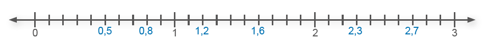Note que 0,8 é maior que 0,5; 2,3 é maior que 1,6, ou seja, a partir do número zero, um número que se encontra a direita de outro número, na reta numérica, é maior que o número anterior.
Também podemos usar a reta numérica para representar centésimos.
Neste caso, devemos dividir o inteiro em 100 partes iguais. Observe a localização dos números decimais abaixo na reta numérica.
► 3,05
► 3,35
► 3,78
► 3,17
► 3,56
► 3,91
214
ENCONTRE SOLUÇÕES
1. O real é a unidade do sistema monetário brasileiro. Ele começou a ser usado em 1994 em substituição ao Cruzeiro Real.
a) Quantos centavos são necessários para termos 1 real?
b) Um centavo corresponde a qual fração do real?
c) Em seu caderno, copie a tabela a seguir e complete-a com a fração decimal e o número decimal que cada moeda representa em relação a 1 real.
No caderno, escreva as quantias representadas em cada item.

2. Veja a seguir as peças do Material Dourado.
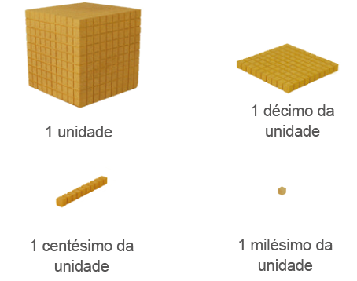► Considerando as peças como referência, em seu caderno, registre as frações decimais e os números decimais representados abaixo. Depois escreva como se lê cada um deles.
a)
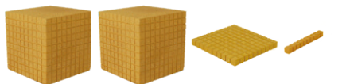b)

c)

d)
e)
f)
g)
h)
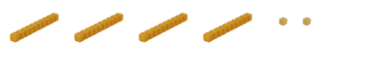215
3. Em seu caderno, escreva as frações decimais na forma de números decimais.
a)
b)
c)
d)
e)
f)
g)
h)
4. No caderno, transforme os números decimais em frações decimais.
a) 0,068
b) 0,9
c) 14,05
d) 8,03
e) 0,0002
f) 1,007
g) 7, 943
h) 2,5
5. Em seu caderno, copie os números decimais a seguir, compare-os e substitua o símbolo ▪ pelos sinais >, < ou =.
a) 1, 09 ▪ 1,90
b) 0,32 ▪ 0,320
c) 2,25 ▪ 3,25
d) 8,080 ▪ 0,008
e) 4,60 ▪ 4,600
f) 5,350 ▪ 5,530
g) 8,3 ▪ 8,03
h 0,06 ▪ 0,061
6. Cada situação a seguir representa um número. No caderno, identifique os números que representam a mesma quantidade.
► 2,8
a) 2,08
b)
c) 2,80
d) 280/100
► 0,03
a) 0,030
b)
c)
d) 0,3
7. Nas olimpíadas de Londres, em 2012, na prova de natação 400 m medley masculino os 3 primeiros colocados foram:
► Kosuke Hagino (Japão) - 4 min 8 s 94
► Ryan Lochte (EUA) - 4 min 5 s 18
► Thiago Pereira (Brasil) - 4 min 8 s 86
Quem ganhou a medalha de ouro, prata e bronze?
8. Nas retas numéricas abaixo, os pontos representam um número decimal. Escreva em seu caderno o número decimal que cada ponto representa.
a)
b)
c)
9. Em seu caderno, escreva as frações decimais na forma de números decimais e localize-os na reta numérica.
►
►
►
►
10. Escreva os números decimais abaixo na forma de frações decimais e localize essas frações na reta numérica.
► 2,1
► 0,8
► 3,3
► 0,9